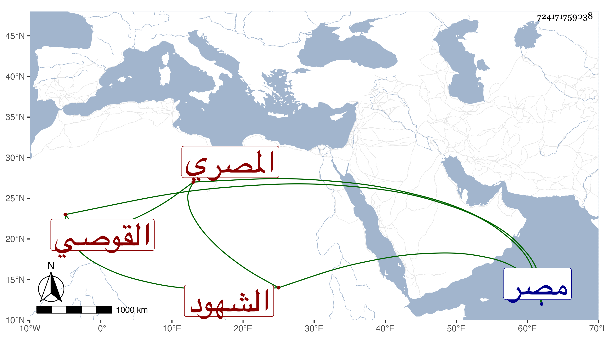

0902Sakhawi.DawLamic.ITO20230111-ara1.EIS1600.724171759038
Biography ID: 724171759038
أحمد بن عبد الله شهاب الدين بن جمال الدين القوصي ثم المصري أحد الشهود المميزة بمصر ولد سنة نيف وسبعين وسبعمائة واشتغل بالفقه والأدب سمعنا من نظمه أشياء حسنة وحج معنا في سنة خمس وثمانمائة ، مات في ثاني عشر رمضان سنة عشر ، قاله شيخنا في معجمه وهو غير أحمد بن إبراهيم بن أحمد الشهاب القوصي الماضي مع اتفاقهما في الاسم واللقب والنسبة والوقت ولكن ذاك يماني وهذا مصري وذكره المقريزي في عقوده وأنه تفقه للشافعي وبرع في الوراقة وتكسب بالشهادة وقال الشعر ومات في ثامن عشري رمضان .
